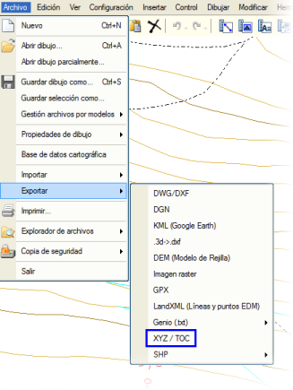
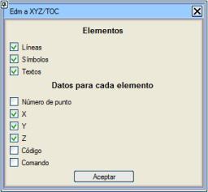

| |
|
.xyz DOSYALARINI DIŞA AKTARMA
|
| Bu araç sayesinde program, yüklü olan çoklu doğruların, sembollerin ve metinlerin verilerini içeren bir .xyz dosyası yazmaya olanak tanır. Bu aracı kullandığımızda, program seçtiğim objeleri dışa aktarma imkanı sunar.  Dışa aktarma dosyasına yazılan değerler şunlar olabilir:
Eğer .xyz dosyası çok büyükse, daha sonra Lazer Tarama Verileri menüsünde işleyerek, programda sorunsuz bir şekilde çalışabileceğimiz bir veritabanı oluşturabiliriz. |